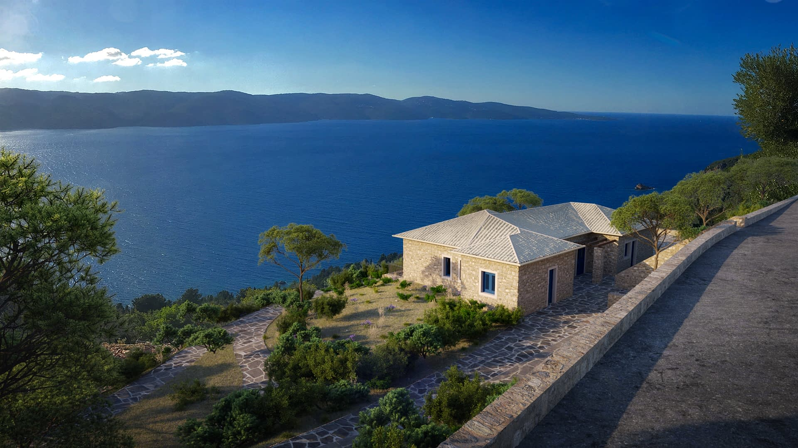

terenceithaque

Lefki is a little village located on the west side of the Niritos mountain, 13 kilometers from Vathy, and near of the village of Stavros.
This village offer one of the most splendide view on Cephalonia, the neighboring island.
Are you looking for the content of a particular beach ? Click right here to access beaches index
Not on the page you are looking for ? Go to the index.
Do you have questions about the content of the site updates? Click here to know everything about updates.
We finish our villages parkour in going to Frikes.
Learn more on vathy on Greeka